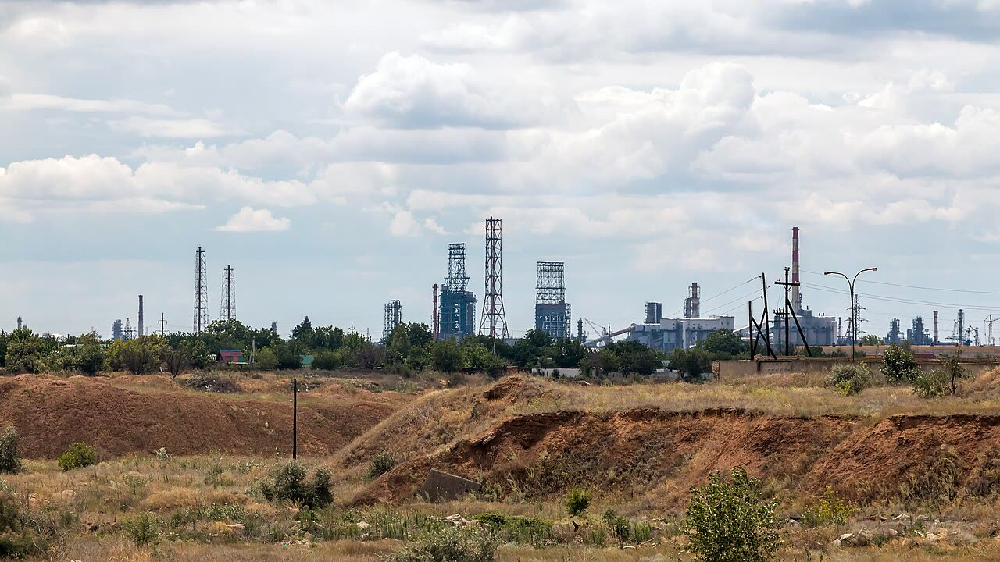

Foto: Mike1979 Russia, CC BY-SA 3.0Raid di Kiev sulle raffinerie russe: per il WSJ sono in pausa, su pressione di Trump
Bombardare le raffinerie russe fa pagare l'energia più cara anche agli europei che finanziano Kiev: la pausa va resa stabile, anche se al distributore italiano per ora non si vede.